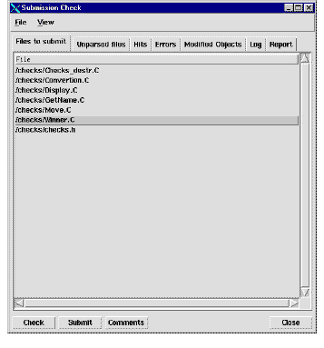

To use submission check
1 Start Developer Xpress.
2 Select File > Service Chooser.
3 Select the desired service.
4 Set Mode to No Transform, unless the paths used for source files differ between the server side and the client, or between the shared and private versions of files.
In this case, set the mode to Transform, and specify in the fields below the roots used for the source on the server, on the client, and for private files.
5 Check out and modify some files.
6 Select the files you want to check.
7 Click File > Sub. Check.
The Submission Check window appears, displaying the selected files in the Files to Submit pane.

8 To check your files, click Check.
Any parse errors appear in the Errors pane, and the results of the queries appear in the Hits pane.
9 To view the list of hits detected by the queries, click Hits.
Hits are in the form of brief descriptions or warning messages, with file names and line numbers attached. The list can be divided into All hits and New hits by using the appropriate buttons at the left bottom of this tab window. Submission Check uses diff to determine whether a hit occurs on a line that has changed, so even minor changes to lines containing hits may cause those hits to be reported as new. The predecessor version against which the diff is run is normally the version of the file that was used during the original model build. However, when you submit a file through Submission Check, a copy of it is stored in the server area, and subsequent checks are run against this version. This should give the correct behavior unless a merge is required, in which case the merge should be done before Submission Check is run. If you submit a file outside of Submission Check, the check reports all changes made in this external submission as part of the new changes.
10 To view the objects in your software that were modified by the submission, click Modified Objects.
The Modified Objects pane shows new objects, objects which were removed, and objects which were changed when you click the New, Removed, or Modified buttons at the bottom left of this tab windows. Again, diff is used to determine which objects are modified, so objects on the same line as a change may be reported as modified even if they were not.
11 After the check is complete, click Unparsed files.
The Unparsed files tab displays the list of files that were not parsed during the model build. These are files no flags were available for, or header files which were not included by any of the checked source files. Currently, Submission Check does not support new files. You can check header files by launching the user interface again with the header and a source file which includes it. To check header files in this way, both the header file and the source file need to be given to SubCheck. Errors for any unparsed files appear in the Errors tab.
12 To view compiler errors in unparsed files, click Errors.
These errors may be normal compiler errors in your code, or they may be artifacts of the method by which Submission Check collects the files to be parsed.
13 To enter submission comments, click Comments.
The Comments dialog box appears.
14 Type in your comments about the files being submitted.
15 Click OK.
Note: Comments are discarded if the submission is made through the normal CM > Check In or outside of Developer Xpress entirely.
16 To submit the files, click Submit.
This checks in the files that you have brought into Submission Check through the CM system that do not have parse errors or new quality hits. The summary report generated by the check is e-mailed to the list of recipients and is also used to generate the check-in comments for each file. In addition, the model server stores a copy of the submitted files and a list of the entities that they contain, so that subsequent submissions use this submission as their background.
17 To view the log for errors after you submit the files, click Log.
Displays the output from the build server as it builds the model and runs the queries. Information displayed there probably is useful only for debugging, in case something goes wrong.
18 To view the report summarizing the findings of the check, click Report.
This is the report that is e-mailed at the time of the submission to the recipients listed in the policy.